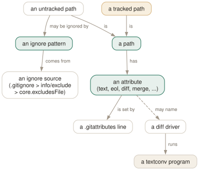

Day 14
Ignore and attributes
Per-path rules: which untracked files git should not offer you, and how to treat the files it keeps.
By the end of today you can
- write ignore patterns that do what you meant, and prove it with
git check-ignore -v - explain why ignoring a file that is already tracked does nothing
- fix line endings for good with
.gitattributes, and get readable diffs of files git thinks are binary
Ignoring is about untracked files, and only those
An ignore rule does not hide a file from git. It stops git from offering an untracked file to you — in git status, in git add ., in git clean without -x. A file that is already tracked is past that point, and no pattern anywhere will make git stop noticing changes to it.
$ git add .env && git commit -m 'Oops'
$ echo .env > .gitignore && echo 'secret=2' > .env
$ git status -s
M .env
?? .gitignore
$ git check-ignore -v .env; echo $?
1
$ git check-ignore -v --no-index .env
.gitignore:1:.env .env
The fix is to stop tracking the file: git rm --cached .env (Day 2) and commit. It stays on disk; now the rule applies. Every earlier commit still has it — Day 1's gotcha about snapshots — so a leaked secret is rotated, not ignored.

Patterns, and the rule nobody expects
gitignore(5) patterns are globs with a few extra rules, and each one matters:
*.log- No slash: matches a name at any depth —
app.log,logs/app.log. /build/- A leading slash anchors the pattern to the directory holding the
.gitignore; a trailing slash matches only directories. Sosrc/build/is not ignored. docs/**/*.html- A slash in the middle also anchors.
**matches any number of directories. !keep.log- Negation: re-include something an earlier line in the same file excluded. Last matching line wins.
$ git check-ignore -v build/a.o src/build/b.o logs/app.log logs/keep.log
.gitignore:1:/build/ build/a.o
.gitignore:2:*.log logs/app.log
.gitignore:3:!keep.log logs/keep.log
src/build/b.o printed nothing: no rule matched, so it is not ignored. keep.log printed its negation line, which means the deciding rule re-included it. check-ignore -v always tells you the one line that decided, which makes debugging a twenty-line .gitignore a matter of seconds.
Three places to put a rule
The sources, from strongest to weakest:
.gitignorefiles in the tree, committed and shared. A deeper file's rules are relative to its own directory and override the ones above it. This is for things the project produces: build output, dependency directories, generated code..git/info/exclude: the same syntax, never committed, this clone only. For a scratch file you keep in one repository.- The file named by
core.excludesFile, which defaults to~/.config/git/ignore— you do not need to set it; create the file. For things you produce everywhere: editor swap files,.DS_Store, your IDE's directory.
The ranking is between sources, not lines: a ! in info/exclude cannot un-ignore what a .gitignore ignores.
$ git check-ignore -v TODO src/build/b.o
/home/ada/.config/git/ignore:1:TODO TODO
.gitignore:1:*.o src/build/b.o
Attributes: how to treat the files you keep
.gitattributes uses the same kind of path patterns, but each line assigns attributes, and they apply to tracked files — that is their whole purpose. Commit it; everyone who clones gets the same behaviour, which is the point. The ones worth knowing:
* text=auto # let git detect text; store it with LF
*.sh text eol=lf # always LF on disk: bash chokes on CR
*.bat text eol=crlf # always CRLF on disk: cmd.exe wants it
*.png binary # = -diff -merge -text: no conversion, no text diff
*.gz diff=gzip # use the 'gzip' diff driver below
tests/ export-ignore # leave out of git archive tarballs
text means “this is text: normalise line endings to LF in the repository”. eol decides what the working-tree copy gets. Adding these rules to an existing project does not change what is already committed; git add --renormalize . re-applies them to the index, and git ls-files --eol shows the result:
$ git add --renormalize . && git ls-files --eol
i/lf w/lf attr/text=auto .gitattributes
i/lf w/crlf attr/text eol=crlf notes.bat
i/lf w/crlf attr/text eol=lf run.sh
run.sh is LF in the index but still CRLF on disk: renormalising rewrites the index, not your files. They are converted the next time git checks them out.
Readable diffs of unreadable files
A diff driver is a name in .gitattributes plus a config entry saying what to do with it. The most useful setting is textconv: a command that receives the file's path and prints text, which git then diffs normally.
$ git diff users.csv.gz
Binary files a/users.csv.gz and b/users.csv.gz differ
$ echo '*.gz diff=gzip' >> .gitattributes
$ git config set diff.gzip.textconv zcat
$ git diff users.csv.gz
@@ -1,2 +1,3 @@
id,name
1,ada
+2,grace
The attribute is committed; the command is not, because it is a program on your machine. Colleagues without the config see the old “Binary files differ”, which is a safe fallback. The same trick works for PDFs (a two-line wrapper script running pdftotext "$1" -, since git appends the path last), SQLite files (echo .dump | sqlite3), office documents — anything with a to-text converter.
Today's habit
Move your personal clutter into ~/.config/git/ignore, and give the next repository you create a .gitattributes in its first commit. Both are one-time changes that stop a whole class of noisy diffs and accidental commits.
Tomorrow the advanced third begins: moving individual commits between branches with cherry-pick, and naming releases with tags.
New vocabulary
Commands
| Command | Does |
|---|---|
git check-ignore -v <path> | Print the file, line and pattern that decides whether path is ignored. |
git check-ignore -v --no-index <path> | The same for a path that is already tracked. |
git status --ignored | Also list ignored files, marked !!. |
git ls-files -o -i --exclude-standard | List every untracked file the ignore rules are hiding. |
git add -f <path> | Add a file despite an ignore rule. |
git check-attr -a -- <path> | Print every attribute set on a path. |
git ls-files --eol | Show line endings in the index and working tree, and the attribute in force. |
git add --renormalize . | Re-apply the current text/eol attributes to every tracked file in the index. |
git archive HEAD | Write a tarball of a commit, leaving out export-ignore paths. |
Options
| Option | Does |
|---|---|
core.excludesFile | Your personal ignore file. Defaults to ~/.config/git/ignore — usually leave it. |
diff.<driver>.textconv | A program that turns a file into text for diffs, used by paths with diff=driver. |
Drillsdo these in a real terminal, today
Self-check
Answer out loud first, then unfold.
You add .env to .gitignore, but git status still reports it modified and git check-ignore .env prints nothing. Is the pattern wrong?
No. Ignore rules apply only to untracked files; they decide what git offers to add, and .env is already in the index. check-ignore reflects that and stays silent for tracked paths unless you pass --no-index, which shows the rule would match.
Stop tracking it with git rm --cached .env (Day 2) and commit. The file stays on disk and is now ignored. It is still in every earlier commit, so if it held a secret, rotate the secret.
Your .gitignore has build/ then !build/README, and the README never appears in git status. Why?
Because gitignore(5) forbids re-including a file whose parent directory is excluded: once build/ matches, git does not look inside the directory at all, so there is nothing for the ! line to rescue. Ignore the contents instead of the directory — build/* — and the negation works, because now the directory is visited and only its entries are ignored.
You set !secret.local in .git/info/exclude to override the project's *.local rule. It has no effect. Why?
Precedence. Within one level the last matching line wins, but between sources the order is fixed: patterns in .gitignore files beat .git/info/exclude, which beats core.excludesFile. A personal file can add ignores but cannot un-ignore something the project ignores. git add -f is the escape hatch; once the file is tracked, the rule no longer applies to it.
You add *.sh text eol=lf and run git add --renormalize .. git ls-files --eol still says w/crlf for your scripts. Did it fail?
Half of it did exactly what it says. --renormalize rewrites the index (the i/ column now says lf), which is what the next commit records. The working-tree files are only rewritten when git next checks them out — delete them and git checkout -- ., or wait for your next branch switch. Commit the renormalisation on its own, so the “every line changed” diff is not mixed up with real work.
Cheat sheet
Ignore: untracked files only. Attributes: every path. Both: last matching line wins.
*.log /build/ docs/**/*.html !keep.log # any depth / anchored dir / ** / negate
logs/* then !logs/keep.log # NOT logs/ - can't re-include in excluded dir
.gitignore > .git/info/exclude > ~/.config/git/ignore
git check-ignore -v PATH [--no-index] # which line decided
git ls-files -o -i --exclude-standard # what is being hidden
* text=auto | *.sh text eol=lf | *.png binary
git add --renormalize . ; git ls-files --eol # apply eol rules to the index
*.gz diff=gzip + git config set diff.gzip.textconv zcat
git check-attr -a -- PATH # -- before paths
Everything through Day 14
Commands
| Command | Does |
|---|---|
git init -b main | Create an empty repository whose first branch is main. |
git hash-object <file> | Print the object name the file's contents would get. Writes nothing without -w. |
git cat-file -t <object> | Print an object's type: blob, tree, commit or tag. |
git cat-file -p <object> | Pretty-print an object's contents. The one command that shows what git really stores. |
git cat-file -s <object> | Print an object's size in bytes. |
git ls-tree -r <tree-ish> | List every blob in a tree, recursively, with mode and hash. |
git rev-parse HEAD | Turn a name into the full hash it currently means. |
git count-objects -v | Count loose and packed objects and the disk they use. |
git status -s | Show each changed path with two columns: index vs HEAD, then working tree vs index. |
git add <path> | Copy the file's current contents into the index. Writes the blob immediately. |
git add -p | Walk through each hunk and choose which ones go into the index. |
git diff | Show what differs between the index and the working tree — what add would stage. |
git diff --staged | Show what differs between HEAD and the index — what commit would record. |
git restore <path> | Overwrite the working-tree file with the index version. Discards unstaged edits. |
git restore --staged <path> | Reset the index entry to HEAD's version. The working tree is untouched. |
git commit [-a] | Turn the index into a tree, wrap it in a commit, move the branch to it. -a first stages every modified tracked file (never untracked ones). |
git rm --cached <path> | Remove a path from the index only; the file stays on disk, now untracked. |
git branch | List local branches; * marks the one HEAD names. |
git branch -v | List branches with the commit each points at and its subject line. |
git branch <name> | Create a branch at HEAD without switching to it. |
git switch <branch> | Point HEAD at a branch and update the index and working tree to its commit. |
git switch -c <name> | Create a branch at HEAD and switch to it in one step. |
git switch - | Switch back to the branch you were on before. |
git switch --detach <commit> | Point HEAD directly at a commit, with no branch in between. |
git branch -d <name> | Delete a branch, refusing unless it is merged into its upstream (or into HEAD, if it has none). |
git branch -D <name> | Delete a branch unconditionally. |
git branch -m <old> <new> | Rename a branch. |
git merge <branch> | Bring the branch's history into the current one: fast-forward if possible, else a merge commit. |
git merge --ff-only <branch> | Merge only if it is a fast-forward; otherwise refuse and change nothing. |
git merge --no-ff <branch> | Always create a merge commit, even when a fast-forward was possible. |
git merge --abort | Give up a conflicted merge and restore the state before it started. |
git merge-base A B | Print the best common ancestor of two commits — the version a merge compares against. |
git ls-files -u | List the unmerged index entries: one line per stage per conflicted path. |
git show :1:<path> | Show the base version of a conflicted file. :2: is yours, :3: theirs. |
git checkout --conflict=merge <path> | Recreate the conflict markers in a file you mangled; =zdiff3 works too. |
git clone <url> | Copy a repository: all objects, its branches as origin/*, and one local branch checked out. |
git remote -v | List remotes with their fetch and push URLs. |
git remote add <name> <url> | Register another repository under a short name. |
git fetch | Download new objects and move the remote-tracking refs. Never touches your branches or files. |
git pull | Fetch, then integrate the upstream into the current branch. |
git push | Send the current branch's commits and move the branch of the same name on the remote. |
git push -u origin <branch> | Push and record origin/<branch> as this branch's upstream. |
git push origin --delete <branch> | Delete a branch on the remote. |
git branch -vv | List branches with their upstream and ahead/behind counts. |
git log --oneline --graph --all | Draw every branch's history, one line per commit. |
git log -p | Show each commit's diff against its parent. |
git log --stat | Show which files each commit touched, and how much. |
git log --author=<re> --since=<date> | Keep only commits whose author matches, from a date onwards. |
git log -- <path> | Keep only commits that changed the path. The -- separates paths from revisions. |
git log --follow -- <file> | Follow one file's history back through renames. |
git log -S<string> | Pickaxe: keep commits that change how many times the string occurs. |
git log -G<regex> | Keep commits whose diff adds or removes a line matching the regex. |
git log -L :<func>:<file> | Show the history of one function (or -L 10,20:file for a line range). |
git show <commit> | Show one commit: message and diff. |
git blame -w -C <file> | Annotate each line with its last commit, ignoring whitespace and seeing moves between files. |
git rev-parse --verify <rev> | Resolve an expression to one object name, or fail. The checker for everything today. |
git rev-parse --abbrev-ref <rev> | Print the short ref name an expression means: @{u} becomes origin/main. |
git rev-parse --symbolic-full-name <rev> | Print the full ref name, e.g. refs/remotes/origin/main. |
git log A..B | List commits reachable from B but not from A: what B has that A lacks. |
git log --left-right A...B | List commits on either side but not both, marked < or >. |
git diff A...B | Diff from the merge base of A and B to B: what B changed since they split. |
git show <rev>:<path> | Print a file as it was in any commit, without checking anything out. |
git show :<path> | Print the version of a file currently staged in the index. |
git commit --amend | Replace the last commit with a new one built from the current index. Opens the editor. |
git commit --amend --no-edit | Amend, keeping the message: for the file you forgot to add. |
git reset --soft <rev> | Move the branch to rev. Index and working tree untouched. |
git reset <rev> | Move the branch and reset the index to it (--mixed, the default). Working tree untouched. |
git reset --hard <rev> | Move the branch, and overwrite index and working tree to match. Destroys uncommitted work. |
git reset -- <path> | Copy path from HEAD into the index: unstage. The branch does not move. |
git restore --source=<rev> <path> | Overwrite a working-tree file with its version from any commit. |
git revert <commit> | Make a new commit that undoes commit. The safe undo for published history. |
git clean -n | List the untracked files -f would delete. Add -d for directories, -x for ignored files. |
git clean -fd | Delete untracked files and directories. Ignored files survive unless -x. |
git rebase <upstream> | Replay the commits in <upstream>..HEAD on top of upstream. With no argument, uses @{u}. |
git rebase --onto <new> <old> [<branch>] | Replay <old>..<branch> on top of new: transplant part of a branch. |
git rebase --continue | After resolving and git adding a conflict, commit it and go on. |
git rebase --skip | Drop the commit that stopped, and go on. |
git rebase --abort | Put the branch back exactly where it was before the rebase started. |
git push --force-with-lease | Overwrite the remote branch only if it is still where your remote-tracking branch says. |
git push --force-if-includes | With the lease: also refuse if the remote tip was fetched but never integrated locally. |
git rebase -i <base> | Open the todo list for <base>..HEAD in your editor, then run it. |
git rebase --edit-todo | Re-open the remaining todo list while a rebase is stopped. |
git commit --fixup=<commit> | Commit the staged change as fixup! <subject>, to be melted into commit later. |
git commit --fixup=amend:<commit> | Like --fixup, but the squash also replaces the target's message. |
git rebase -i --autosquash <base> | Move every fixup!/squash!/amend! commit under its target and mark it. |
git rebase -x '<cmd>' <base> | Run cmd after every replayed commit; stop at the first failure. |
git range-diff <base> <old> <new> | Pair up the commits of two versions of a branch and show how each changed. |
git reflog | List where HEAD has pointed, newest first, as HEAD@{n} entries. Short for git reflog show HEAD. |
git reflog show <branch> | List where one branch has pointed. Its entries are <branch>@{n}. |
git reflog --date=iso | Show each entry's time instead of its index: main@{2026-09-25 09:00:00 +0200}. |
git log -g | Walk a reflog with the full git log formatting options. |
git reset --hard ORIG_HEAD | Undo the last reset, merge or rebase: go back to where it started. |
git branch <name> <commit> | Give a recovered commit a name again, so it is safe for good. |
git fsck --unreachable | List objects nothing refers to — not even a reflog. Where dropped stashes are found. |
git config list --show-origin --show-scope | List every setting in effect, with the file and scope it came from. |
git config get <name> | Print the value git will use. Exit status 1 if unset. |
git config set [--global] <name> <value> | Write a setting, to the repository's .git/config unless told otherwise. |
git config unset [--global] <name> | Remove a setting from one file. Exit status 5 if it was not there. |
git config edit --global | Open ~/.gitconfig in your editor. |
git -c <name>=<value> <cmd> | Override one setting for one command, above every file. |
git help <alias> | Print what an alias expands to. |
git stash push -m <msg> | Save staged and unstaged changes to tracked files as a stash entry, and clean the tree. |
git stash push -u | Include untracked files. -a also takes ignored ones. |
git stash push --staged | Stash only what is in the index. |
git stash list | List entries; stash@{0} is the newest. |
git stash show -p [stash@{n}] | Show an entry as a patch. Add --include-untracked to see its untracked files. |
git stash apply [--index] | Reapply an entry and keep it. --index restores what was staged as staged. |
git stash pop [--index] | Apply, and drop the entry only if it applied cleanly. |
git stash drop [stash@{n}] | Delete one entry. |
git stash branch <name> | Create a branch at the commit the stash was made on, apply it there, drop it. |
git worktree add <path> [-b <new>] [<branch>] | Check out a branch in a new directory that shares this repository. |
git worktree list | List every working tree with its HEAD and branch. |
git worktree remove <path> | Delete a clean worktree. git worktree prune forgets ones you deleted by hand. |
git check-ignore -v <path> | Print the file, line and pattern that decides whether path is ignored. |
git check-ignore -v --no-index <path> | The same for a path that is already tracked. |
git status --ignored | Also list ignored files, marked !!. |
git ls-files -o -i --exclude-standard | List every untracked file the ignore rules are hiding. |
git add -f <path> | Add a file despite an ignore rule. |
git check-attr -a -- <path> | Print every attribute set on a path. |
git ls-files --eol | Show line endings in the index and working tree, and the attribute in force. |
git add --renormalize . | Re-apply the current text/eol attributes to every tracked file in the index. |
git archive HEAD | Write a tarball of a commit, leaving out export-ignore paths. |
Options
| Option | Does |
|---|---|
user.name / user.email | Set the identity written into every commit's author and committer lines. |
init.defaultBranch | Name the first branch of every new repository. |
commit.verbose | Show the staged diff below the message in the commit editor. |
branch.sort | Set the default order of git branch; -committerdate puts recent work first. |
merge.conflictStyle | Choose the marker style: merge (default), diff3 or zdiff3. |
pull.ff | only: let git pull fast-forward and refuse anything else. |
push.autoSetupRemote | Make a plain git push of a new branch create it upstream and track it. |
fetch.prune | Delete remote-tracking refs whose branch was deleted on the remote, on every fetch. |
diff.colorMoved / diff.colorMovedWS | Colour moved blocks differently from added and removed ones; allow-indentation-change still recognises a re-indented move. |
push.useForceIfIncludes | Make every --force-with-lease behave as if --force-if-includes were given. |
rebase.autoSquash | Make rebase -i autosquash by default. Interactive mode only. |
rebase.updateRefs | Also move any branch that points into the rebased range (--update-refs). |
gc.reflogExpire | Age after which reflog entries are pruned. Default 90 days. |
gc.reflogExpireUnreachable | Same, for entries no longer reachable from the ref's tip. Default 30 days. |
core.logAllRefUpdates | Whether reflogs are kept. True by default with a working tree, false in a bare repository. |
includeIf."gitdir:<dir>/".path | Read another config file only for repositories under dir. |
alias.<name> | Define git <name>. A leading ! makes it a shell command. |
GIT_CONFIG_GLOBAL | Read this file instead of ~/.gitconfig; /dev/null for none. |
GIT_PREFIX | Set for shell aliases: the directory you ran them from, relative to the top level. |
core.excludesFile | Your personal ignore file. Defaults to ~/.config/git/ignore — usually leave it. |
diff.<driver>.textconv | A program that turns a file into text for diffs, used by paths with diff=driver. |